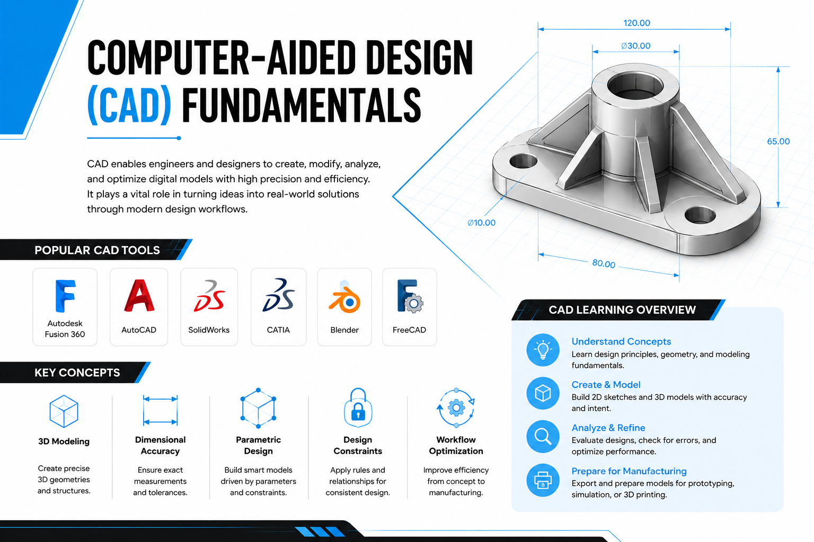
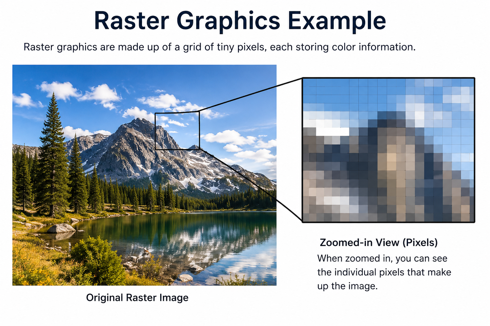
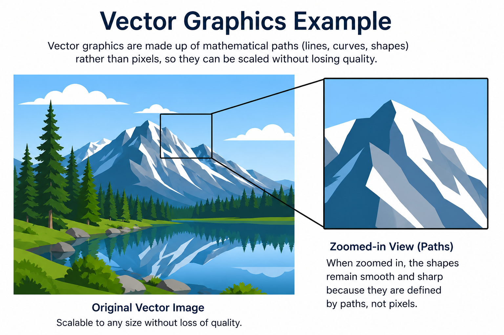

A hands-on journey through the tools, workflows, and collaborative practices that define real-world engineering development.
The Summer Internship Program began with an introductory session by Dr. Kiran Wakchaure Sir and
Dr. Tanay Ghosh Sir,
who introduced us to
Tinkerers’ Lab
Its vision and the technical learning approach followed throughout
the internship.
The session provided an overview of the technologies, workflows,
collaborative practices and engineering tools that would be explored
during the program. It established a clear understanding of how modern
technical environments combine software development, documentation,
design systems and fabrication workflows into one integrated process.
During the first week, I was introduced to multiple technical domains
including professional documentation, development environments,
collaborative platforms, visual communication, CAD systems
and digital fabrication tools.
Rather than focusing on only one technology stack, the internship
introduced a broader interdisciplinary workflow. This helped in
understanding how technical planning, engineering design,
software workflows, and manufacturing preparation connect together
in real-world project development.
01
PROFESSIONAL DOCUMENTATION & WORKFLOW
Professional Documentation & Technical Workflow
One of the first topics introduced during the internship was
professional documentation and technical workflow management.
I learned that documentation is not only about recording information,
but also about organizing technical work, maintaining project clarity,
and communicating ideas effectively.
The sessions highlighted the importance of documentation in software
development, engineering workflows, collaborative environments,
troubleshooting, and long-term project management.
Proper documentation supports:
Tracking project progress systematically
Maintaining organized technical records
Improving collaboration between team members
Understanding workflow decisions clearly
Revisiting previous implementations efficiently
We also explored how structured workflows improve task management,
coordination, and consistency across technical projects.
The organization style of this documentation was inspired by
the structured documentation practices followed in
Fab Academy, especially the work of
Dr. Kiran Wakchaure.
Fig. 1.0:
Internship Learning, Task Management,
and Technical Documentation Workflow
02
COLLABORATIVE DEVELOPMENT & VERSION CONTROL
GitHub & GitLab - Collaborative Development
To understand how modern development teams organize and manage
technical projects, I explored
GitHub
and
GitLab.
These platforms introduced me to version control systems,
collaborative development practices, repository management,
and structured project workflows commonly used in
software development environments.
Key concepts covered during the learning process included:
Repositories and project structure
Commits and version history tracking
Managing project files systematically
Collaborative contribution workflows
Tracking modifications and updates efficiently
Supporting parallel development in teams
The sessions helped in understanding how collaborative platforms
simplify project management, maintain development history,
and improve coordination between contributors working on
shared technical projects.
Quick Reference - Git Commands You’ll Use Every Day
These are the most important Git commands beginners use regularly.
You do not need to memorize everything immediately. Just understand
what each command does and practice slowly.
1
Clone a Repository
Downloads a GitHub repository from the internet to your computer.
Usually done only once when starting a project.
# Download project to your computer
git clonehttps://github.com/user/repo.git
After cloning, a new project folder will appear on your computer.
2
Check File Status
Shows which files were changed, added, or are ready to commit.
# See what changed
git status
This is one of the safest and most useful Git commands.
3
Stage Your Files
Tells Git which changed files should be included in the next commit.
# Stage all changed files
git add .
Beginners often forget this step before committing.
4
Create a Commit
Saves a snapshot of your changes with a short message explaining
what you changed.
# Save changes with a message
git commit-m"Added homepage design"
Good commit messages make projects easier to understand later.
5
Push to GitHub
Uploads your commits from your computer to GitHub.
# Upload your changes to GitHub
git push
After pushing, your updated code appears on GitHub online.
6
Pull Latest Changes
Downloads the newest changes from GitHub to your computer.
Helpful when working with teammates.
# Get latest updates from GitHub
git pull
Pull before starting work to avoid conflicts.
7
View Commit History
Shows previous commits and helps you track project history.
# Show previous commits
git log--oneline
Every commit acts like a saved checkpoint in your project.
Fig. 2.0:
Creation of a new repository for the
“Summer Internship Program 2026 - Tinkerers’ Lab, Sanjivani University”
project documentation.
Fig. 2.1:
Repository initialization and organization
of required project resources, folders,
and technical documentation files.
Fig. 2.2:
Editing and updating HTML documentation files
directly through the GitHub web interface.
Fig. 2.3:
Deployment and visualization of documentation files
using GitHub Pages hosting service.
03
DEVELOPMENT ENVIRONMENT & AI-ASSISTED WORKFLOW
Development Environment - Visual Studio Code
Although I was already familiar with
Visual Studio Code (VS Code),
I selected it as the primary development environment for preparing
this internship documentation project.
Since the documentation was developed as an HTML-based project,
VS Code provided an efficient workspace for editing source files,
organizing project directories, managing image assets,
and maintaining a structured workflow within a single environment.
One of the most useful features during development was the
live HTML preview workflow, which made it easier to verify:
Layout consistency and responsive structure
Hyperlinks and navigation behavior
HTML and CSS integration
Overall user interface presentation
The integrated Git and GitHub support inside VS Code also simplified
version control operations such as staging changes,
reviewing file modifications, committing updates,
and synchronizing repositories directly from the editor.
As a Computer Science student, I additionally explored
AI-assisted development workflows integrated into the VS Code ecosystem.
Multiple AI tools were tested during documentation and interface development,
including
ChatGPT,
Claude Sonnet,
Claude Opus,
and
Blackbox AI.
These tools were primarily used for HTML refactoring,
improving documentation clarity, optimizing layout structure,
and accelerating rapid prototyping of web components.
Learning Outcome:
The combined workflow of VS Code, Git integration,
and AI-assisted development tools significantly improved
productivity, debugging efficiency, documentation quality,
and overall development speed throughout the project.
The above Git commands were used from VS Code to stage, commit,
and upload modified project files to GitHub for
version control and deployment tracking.
Fig. 3.0:
HTML document development in Visual Studio Code
with embedded CSS for enhanced user interface design.
Fig. 3.1:
Version control workflow for saving and uploading
modified VS Code project files to GitHub repository.
Fig. 3.2:
Utilization of AI-assisted development tools
for HTML refactoring, documentation optimization,
and rapid web component prototyping.
04
DIGITAL CONTENT CREATION & VISUAL COMMUNICATION
Digital Content Creation & Visual Communication
A major component of Week 1 focused on understanding
the principles, workflows, and technologies involved in
digital content creation, visual communication
and technical presentation workflows.
The exploration emphasized how digital information
can be captured, structured, designed,
and communicated effectively using modern software platforms.
Particular attention was given to workflow optimization,
visual hierarchy, scalability,
and technical documentation practices.
Multiple platforms were explored across different domains
including screen recording, graphic design,
vector illustration, and system visualization workflows.
4.1 SCREEN RECORDING & MEDIA PRODUCTION
OBS Studio
OBS Studio
was explored as a professional-grade open-source platform
for screen recording, live media capture,
and real-time content production workflows.
The study involved understanding recording pipelines,
scene composition, source management,
audio-video synchronization,
and export workflows commonly used
in tutorial creation and technical demonstrations.
OBS Studio demonstrated how structured recording environments
can be used to produce high-quality software walkthroughs,
technical presentations, instructional videos,
and system demonstrations.
Features such as multi-source scene integration,
display capture, audio mixing,
transition management, encoding configuration,
and bitrate optimization introduced several
important concepts related to professional media production.
Video 4.1:
OBS Studio installation, configuration,
and screen recording demonstration workflow.
4.2 VISUAL DESIGN & DIGITAL COMMUNICATION
Canva
Canva
was explored as a cloud-based visual communication,
graphic design, and digital publishing platform
used for creating presentations, infographics,
social media assets, posters,
UI mockups, and branded communication content.
The platform demonstrated how modern web-based
design systems simplify professional content creation
through template-driven workflows,
drag-and-drop interfaces,
and integrated cloud collaboration technologies.
The exploration focused on understanding
the fundamental principles of digital visual communication,
including:
Typography management and readability
Spacing systems and alignment structures
Color theory and contrast optimization
Visual hierarchy and composition balancing
Responsive layouts and grid-based design systems
Reusable templates and scalable design workflows
Through practical experimentation,
Canva demonstrated how structured design frameworks
improve workflow efficiency
while maintaining visual consistency
throughout large-scale content production processes.
Additional exploration included Canva’s integrated
asset management ecosystem,
which provides stock media libraries,
icon repositories, font systems,
animation tools, branding kits,
and collaborative editing environments.
The platform also introduced rapid prototyping workflows
and template-based automation techniques
commonly used in digital branding,
educational content development,
advertising design,
and social media communication systems.
Overall, Canva provided practical exposure
to modern visual communication workflows,
demonstrating how user-friendly interfaces
can be combined with professional design principles
to support scalable content development
across academic, technical,
and commercial environments.
Fig. 4.2.0:
Logo enhancement using Canva through
font styling, color adjustment,
background customization,
text positioning,
and animation effects.
Fig. 4.2.1:
Image editing and application
of creative design templates
within the Canva workspace.
Fig. 4.2.2:
Final logo refinement,
export preparation,
and saving of completed design assets.
4.3 VECTOR GRAPHICS & SCALABLE ILLUSTRATION
Inkscape
To understand scalable graphic design workflows
and vector-based rendering systems,
Inkscape
was explored as an open-source vector graphics editor
commonly used for technical illustrations,
scalable artwork, interface design,
and diagram creation.
The exploration introduced the mathematical foundations
of vector graphics,
where graphical objects are represented using
paths, nodes, curves,
and geometric equations
instead of traditional pixel-based raster formats.
This vector-based approach enables
resolution-independent rendering,
allowing graphics to be scaled
without any loss in visual quality
across different display sizes and export formats.
Practical experimentation within Inkscape demonstrated
several important concepts related to
precision-based illustration workflows,
including:
Bézier curve manipulation and node editing
Object transformation and alignment systems
Layer management and structured composition
Path operations and geometric editing workflows
SVG (Scalable Vector Graphics) standards
Precision-oriented vector illustration techniques
These capabilities demonstrated how vector-based workflows
are used in technical documentation,
engineering illustrations,
UI/UX asset creation,
and digital publishing environments
where scalability and editability are essential.
The platform also highlighted the advantages
of vector graphics in maintaining
design consistency,
cross-platform compatibility,
reusable assets,
and high-quality rendering
across multiple output resolutions.
Fig. 4.3.0:
Circular vector object creation
using stroke properties in Inkscape.
Fig. 4.3.1:
Integration of raster profile image
within a circular vector boundary.
Fig. 4.3.2:
Vector editing workflow demonstrating
scalable illustration and precision-based
graphic composition within Inkscape.
4.4 SYSTEM VISUALIZATION & PROCESS DIAGRAMMING
Draw.io
Draw.io
was explored as a diagramming
and system visualization platform
used for creating technical diagrams,
workflow structures,
architectural layouts,
flowcharts,
organizational structures,
and planning frameworks.
The platform demonstrated how complex systems,
operational processes,
and technical architectures
can be transformed into structured visual representations
for improved understanding,
analysis,
and communication.
Particular emphasis was placed on:
Logical flow representation and process mapping
Hierarchical organization of system components
Workflow visualization and relationship structuring
Diagram standardization and technical clarity
Planning-oriented graphical communication
Architecture and systems documentation workflows
Through practical experimentation,
Draw.io introduced concepts related to
systems modeling,
UML-style structuring,
network representation,
workflow automation planning
and documentation standardization techniques.
These skills are highly applicable in
software engineering documentation,
project management,
systems analysis,
workflow optimization
and technical planning environments.
The exploration also reinforced
the importance of diagrammatic communication
in simplifying complex information,
improving collaboration
and supporting structured
problem-solving methodologies
across technical and organizational workflows.
Video 4.4:
Workflow diagram development
and process visualization
using Draw.io platform.
05
COMPUTER-AIDED DESIGN & ENGINEERING WORKFLOWS
Computer-Aided Design (CAD) Fundamentals

Fig. 5.0:
Introduction to CAD-based engineering workflows,
digital modeling environments,
and computer-aided design systems.
As the internship progressed,
the learning focus expanded toward
Computer-Aided Design (CAD)
,
a fundamental technology widely used across
engineering, manufacturing,
product development,
architecture,
digital prototyping,
and industrial design environments.
CAD systems enable users to create,
modify,
visualize,
analyze,
and optimize digital designs
with high precision and workflow efficiency.
The exploration of CAD fundamentals introduced
how modern engineering workflows are supported
through specialized software platforms such as:
These platforms demonstrated how concepts
can be transformed into structured digital models
suitable for simulation,
prototyping,
manufacturing,
visualization,
and iterative design refinement processes.
Learning CAD fundamentals also introduced
several important concepts including:
3D Modeling and geometric construction
Dimensional accuracy and measurement systems
Parametric design methodologies
Design constraints and feature relationships
Workflow optimization within CAD environments
Engineering visualization and digital prototyping
Understanding these principles helped establish
a strong connection between conceptual problem-solving
and practical engineering implementation workflows.
Learning Outcome:
This foundational exposure to CAD systems
created a pathway toward advanced topics involving
3D modeling,
digital object development,
simulation workflows,
and 3D printing preparation processes.
CAD Learning Overview
Design Fundamentals
Understanding digital design concepts,
engineering geometry,
visualization techniques,
and structured CAD workflows.
3D Modeling
Exploring model creation using sketches,
features,
constraints,
and feature-based construction workflows.
Precision & Constraints
Applying dimensions,
tolerances,
and parametric relationships
to maintain design consistency and accuracy.
CAD Software Ecosystem
Exposure to Fusion 360,
AutoCAD,
SolidWorks,
CATIA,
Blender,
and FreeCAD across engineering workflows.
Engineering Applications
Understanding CAD usage in manufacturing,
product development,
simulation,
prototyping,
and 3D printing preparation systems.
06
2D Design : Raster & Vector Graphics
Digital Raster & Vector Graphics

Fig. 6.0: Raster graphics (pixel/bitmap) — used for photographs and detailed imagery.
Raster graphics store image information per-pixel. Resolution determines printed and on-screen clarity — scaling up a raster image can cause pixelation. Common raster workflows include photo editing, compositing and bitmap-based image preparation for publications.
Common file formats: .BMP, .TIF, .GIF, .JPG, .PNG

Fig. 6.1: Vector graphics (resolution-independent) — ideal for diagrams, icons and technical illustrations.
Vector graphics are constructed using mathematical paths, curves and shapes which makes them fully scalable without quality loss. They are the preferred format for logos, technical diagrams, CAD imports/exports (SVG/DXF), and print-ready artwork.
Common file formats: .SVG, .EPS, .PDF, .AI, .DXF
07
3D Modeling
3D Modeling — Fusion 360
Building on the 2D foundation, the module covered 3D modeling concepts, parametric design and feature-based workflows. Learners used Autodesk Fusion 360 to create constrained sketches, features, assemblies and exported models for downstream manufacturing.
Fusion 360 provided practical exposure to sketch-driven features, parametric relationships, assemblies and model preparation for simulation and fabrication.
Fig. 7.0: Fusion 360 workspace overview (opens on YouTube).
08
3D Printing Workflow
3D Printing Workflow — Bambu Lab Studio
The module focused on transforming digital 3D models into printable toolpaths using a slicing environment. Bambu Lab Studio was used to configure printer profiles, slice models and generate machine-ready g-code.
Exporting printer-ready files and pre-print checks
Fig. 8.0: Slicer configuration and preview stages used to prepare models for printing.
09
Key Skills & Competencies
Key Skills & Competencies Developed
Week 1 contributed to a combination of technical and workflow-oriented skills across documentation, version control, development environments and fabrication toolchains.
Professional documentation & structured reporting
Version control workflows (GitHub / GitLab)
Development environment setup (VS Code)
Digital content creation & visual communication
Technical diagramming & CAD fundamentals
3D modeling and print preparation basics
Fig. 9.0: Summary of key skills cultivated during Week 1.
10
Tool Reference
Tool Reference Table
The following table lists key tools referenced in Week 1 and their primary purpose.
The first week was technically diverse and practically engaging. Exposure to multiple domains provided a strong foundation for interdisciplinary problem solving and experimentation.
Working across documentation, design, CAD and fabrication workflows emphasized the importance of iterative prototyping, clear documentation and collaborative development practices.
Fig. 11.0: Reflection notes and learning log snapshots.